ARKAI Research Lab Logo Concepts
VERIFICATION: From Logo to Ark
Demonstrating how the "Interlocking Diamond" (Step 6) transforms into the final Ark. Each color represents a specific piece of the fold.
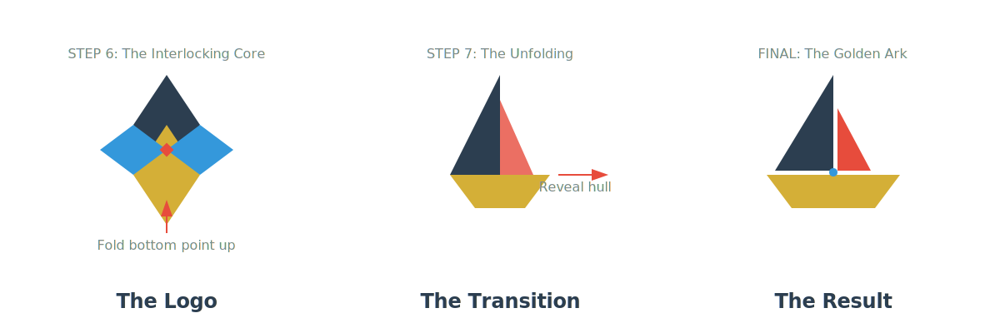Concept 13: Interlocking Origami Ark (Step 6)
Inspired by Step 6 of the traditional origami sailboat. This geometric diamond represents the precise folds required to create an Ark, using the Navy, Gold, and Red palette.
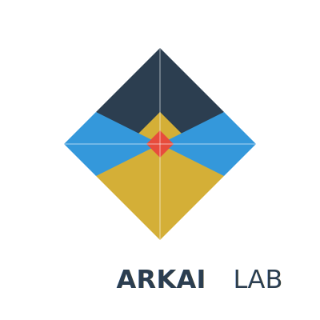Concept 12: Subtle Origami (Abstract)
Making the "Ark" less obvious. These designs focus on geometric folds and sharp lines where the vessel concept is a hidden or emergent property.
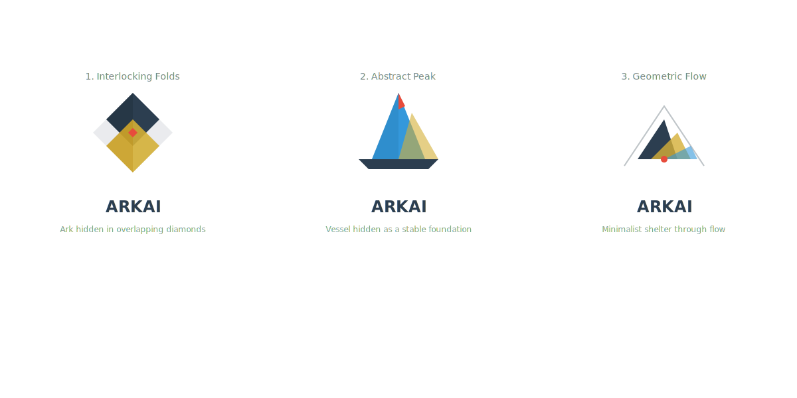NEW: Refined Origami Ark
Clean geometric folds symbolizing precision and unfolding potential. Uses the same Navy, Gold, and Red palette as the Golden Ark.
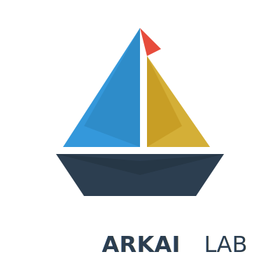THE FAVORITE: Refined Golden Ark
Fibonacci-based "Golden Wave" protecting a sturdy Red Ark. More obvious waves, clear color separation, and no AI nodes.
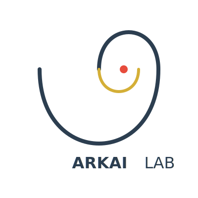Concept 11: Divine Beauty & Science
Exploring God's beauty (Golden Ratio, Light, Trinity) and Safety.
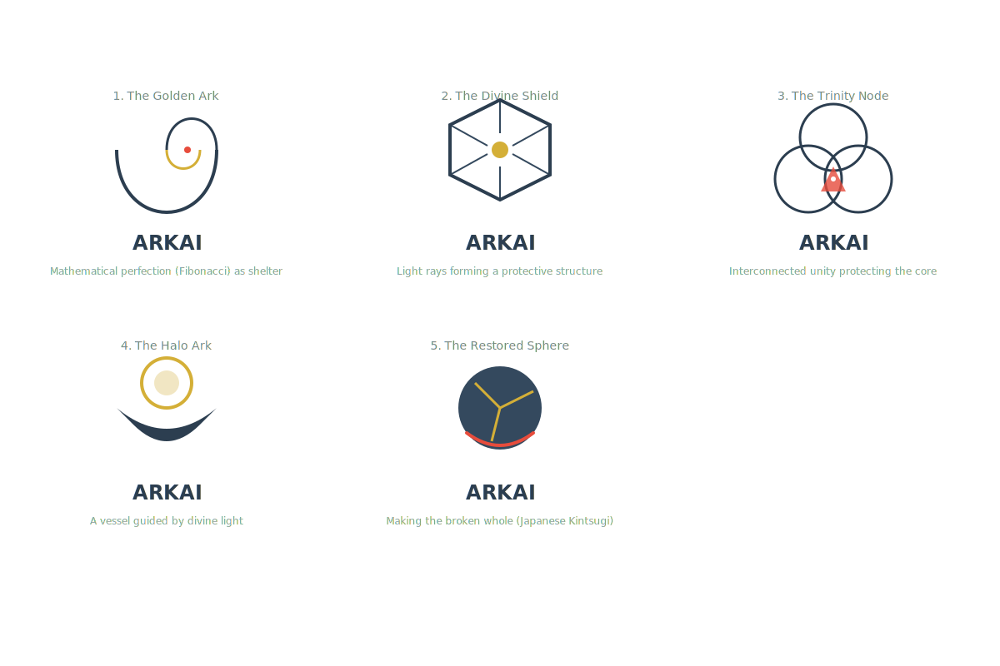Concept 10: Story-Driven (Part 2)
Sound of Truth (Audio), Unlearning Void, Neural Weave (Resilience).
Concept 9: Story-Driven (Part 1)
Prism Ark (Clarity), Topology Vessel (Structure), Digital Beacon (Guidance).
Concept 8: Thinner Blue Waves (Refined Logo #7)
Elegant, fluid waves with invertible "Hidden Ark" feature.
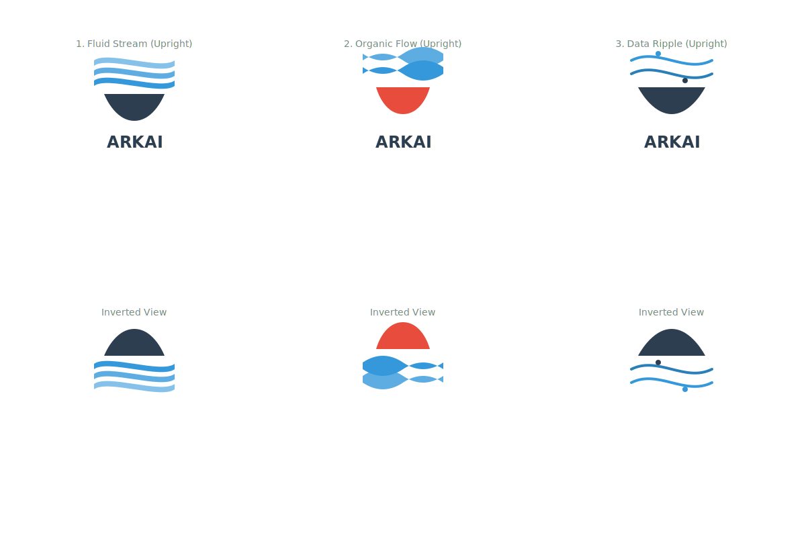Concept 7: Invertible Ark (Logo #7 Variations)
Top bars become waves; when inverted, reveals an Ark on water.
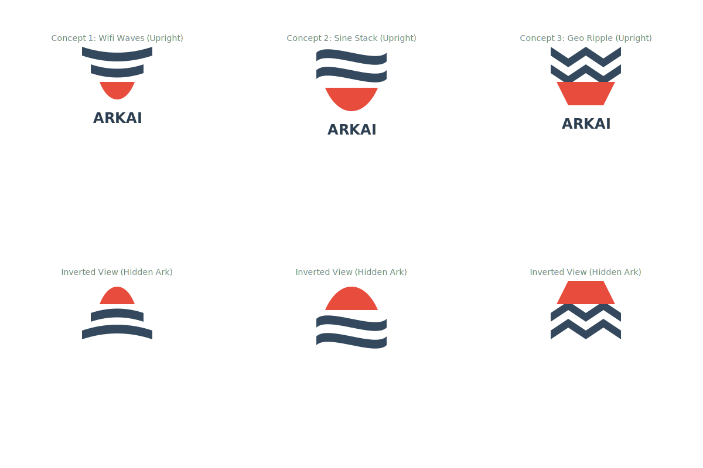Concept 6: 10 Abstract Brainstorms
Diverse concepts (Geometric A, Tech Shield, Swoosh, etc.).
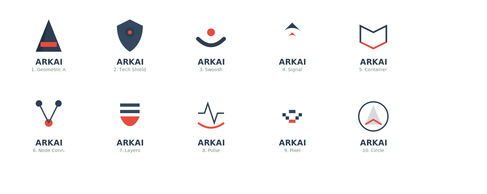Concept 5: Refined Subtle Arks
Abstract shapes (Origami A, Book/Wings, Prism) with correct V4 colors.
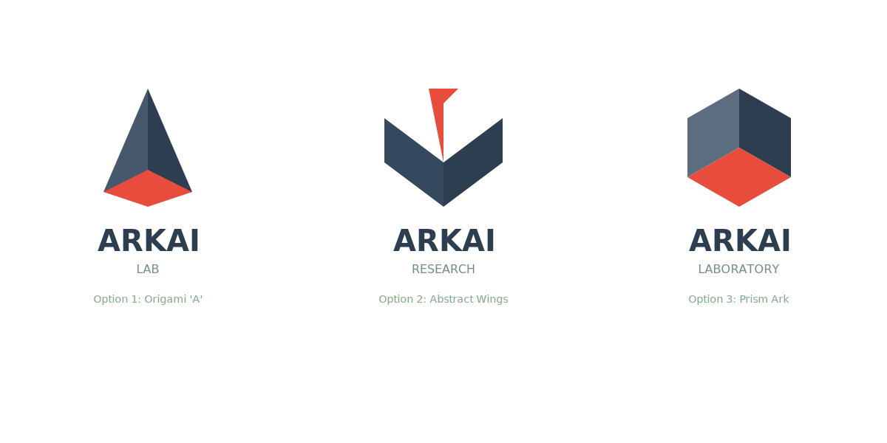Concept 4: Ark Variations (Set 3)
Neural Ark, Origami Ark (Original), Monogram Ark.
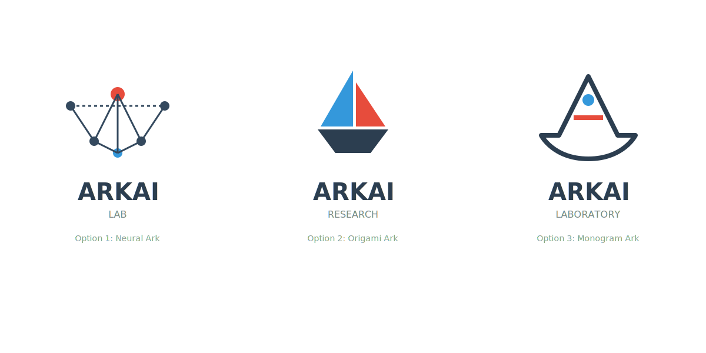Concept 3: Ark Themes (Set 2)
Shield-Ark, Cyber Ark, Geometric Ark.
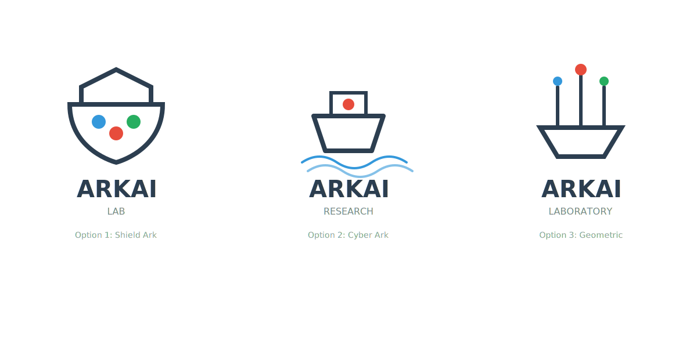Concept 2: Initial Ideas
Shield, Eye, Modern.
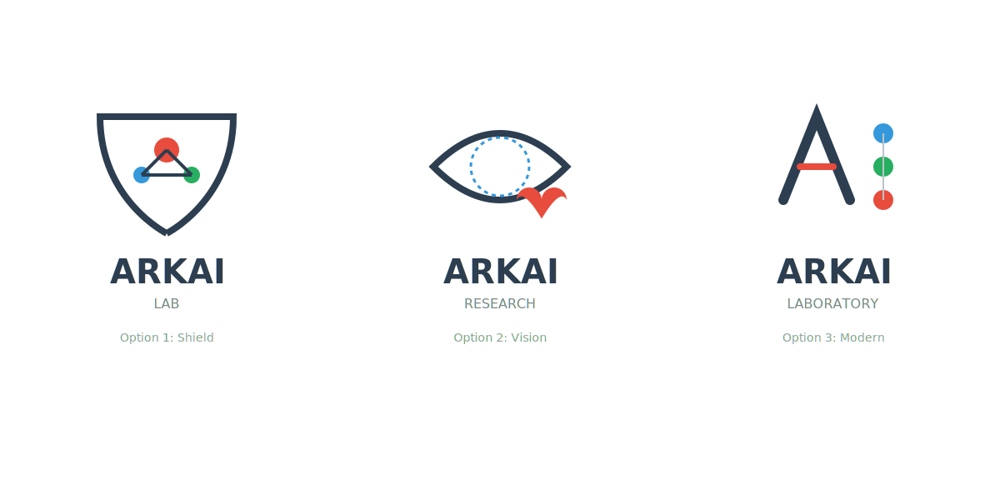